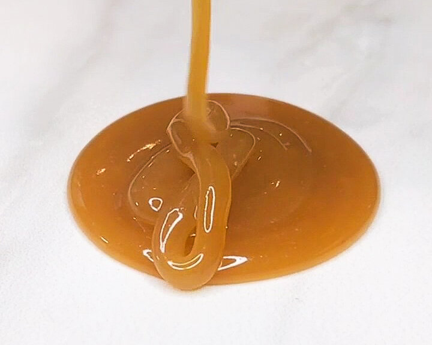

Vegan Guinness Caramel Sauce
Pretty sure this vegan Guinness caramel sauce consists of pure liquid gold from the leprechauns of St. Patrick’s day happenings. Maybe not…but hey. It’s silky smooth with a hint of salt that’s irresistible. This recipe is vegan, and it could be made without the Guinness entirely, making it a gluten free caramel sauce.
I want to focus on the fact that you need to use coconut cream for this recipe. Trust me…I tried to make it with different brands of coconut milk and it just won’t work. I use this coconut cream, but other brands may work as well. I want to play around with other variations of this caramel sauce; it’s so versatile and quick to make!
Just want to say that I’m so happy and excited right now. I’m going through my old blog posts (since rehosting them on thefoodkimist wiped out the formatting D:). In the process of reformatting everything, it’s like I’m having all these memories of times in my life that I completely lost from my memory. But re-reading everything puts me RIGHT back there like yesterday. It puts so much into perspective and wow. Sometimes it feels like nothing is changing, until literally everything is different. I am so happy to be here and happy to have found my way in the chaos. Starting to understand that getting lost on the path sometimes is necessary; you’re exactly where you’re supposed to be in order to get where you’re going. Sometimes you just need to take a couple extra routes and roundabouts before so.
Over the moon with where my roundabouts have brought me. I’m exactly where I’m meant to be :) and wow. How fulfilling.

This vegan caramel sauce is silky smooth with a hint of salt that’s irresistible. It takes 10 minutes to make, and it’s great to top on ice cream, cake, brownies, and more. Let me know if you try it out! I’d love to see on TikTok or Instagram.
Vegan Guinness Caramel Sauce
Makes: 1 & 1/3 cup caramel
-
1 cup coconut cream (this is critical. Coconut milk won't work.)
-
1 cup brown sugar
-
1 TBSP cornstarch
-
1/4 cup Guinness
-
1/4 tsp salt
-
Whisk together the Guinness and cornstarch. Then combine all ingredients (except for the salt) in a small saucepan.
-
Simmer on low for 8-10 mins to thicken, stirring often.
-
Remove from heat, stir in 1/4 tsp salt, and store in fridge to chill overnight (it thickens after chilling).
Notes: The video below is when it's chilled! For a thicker sauce, use 1/2 TBSP more cornstarch.